|
 |
 |
Puntos de
Inflexión Ecológica
- Cómo funcionan?
- Transformando círculos viciosos a círculos virtuosos
- Ingredientes para el éxito
- Elaboren sus propios Puntos de Inflexión Ecológica
Historias por Región
Historias por Tema
- Agricultura
- Agua y Cuencas
- Bosques
- Ecosistemas Urbanos
- Educación
- Energía
- Negocios
- Pesquerías
- Salud Pública
Videos Cortos
- Salvando un arrecife coral y una pesquería
(Filipinas) - Revitalizando vecindades urbanas con jardines comunitarios
(Nueva York) - Revirtiendo la deforestación tropical con bosques comunitarios
(Thailandia) - Rellenando aguas subterráneas con captación pluvial
(Rajastán, India) - Escapando la trampa de pesticidas
(India)
Explicando el Éxito
- Salvando un arrecife coral y una pesquería
(Filipinas) - Revitalizando vecindades urbanas con jardines comunitarios
(Nueva York) - Revirtiendo la deforestación tropical con bosques comunitarios
(Thailandia) - Rellenando aguas subterráneas con captación pluvial
(Rajastán, India) - Escapando la trampa de pesticidas
(India)

Ecología Humana: Presenta los principios de la ecología humana que sirven de fundamento a los Puntos de Inflexión Ecológica
Puntos de Inflexión Ecológica: Palancas Para la Sustentabilidad
- Autor: Gerald G. Marten
- Segundo Congreso Internacional de Casos Exitosos para el Desarrollo de Sociedades Sustentables - Boca del Río, Veracruz, México - 5 al 8 de mayo 2008
- Gerald G. Marten
East-West Center, Honolulu, Hawaii
Correo electrónico: marteng@eastwestcenter.org
Sitio de Internet: www.gerrymarten.org
El problema con la problemática ambiental estriba en que la problemática es de complejidad y escala abrumadoras y conducida por fuerzas sociales y ecológicas también abrumadoras. A menudo parece como si nadáramos a contracorriente y sin esperanzas cuando intentamos hacer un cambio positivo. De esta forma, quiero contarles de un enfoque para aliviar estos problemas y que hace que esta complejidad sea más manejable, a la vez que nos indica vías de acción.
Con el paso de los años, como ecologista de sistemas enfocado en la ecología humana (Marten 2001), he visto y me he enterado de situaciones que han sido transformadas de desastre o desastre potencial y han sido dirigidas hacia la sustentabilidad. Me he preguntado cuáles son los factores que entran en juego en estas situaciones, y en años recientes, me he dado a la tarea de investigarlos. Mi meta ahora es difundir lo que he encontrado de utilidad, para que las personas puedan ser más efectivas al momento de crear soluciones para sus comunidades.
Desde hace algunos años colaboro con una periodista - Amanda Suutari - en la búsqueda de las lecciones que nos dan las historias de éxito frente a un problema ambiental. Recolectamos aproximadamente cien historias de todo el mundo, e hicimos visitas de campo para documentar veinte de estas historias. Fuimos a la India, al sudeste de Asia y a los Estados Unidos.
Encontramos que las historias tenían mucho en común. En cada historia, la biodiversidad, la integridad del ecosistema y la salud del ecosistema iban de la mano con el bienestar humano. Y en cada historia, los cambios drásticos del deterioro ambiental a la restauración podían rastrearse hasta un detonante - una palanca que inició el cambio. Yo llamo a esta palanca un "Ecotipping Point" (Marten et al. 2005, www.ecotippingpoints.org).
La frase "tipping point," popularizada por el libro del mismo título (Gladwell 2000), ha tenido varias acepciones - en todos casos connotando un cambio dramático a un estado completamente diferente que antes. Existen varias frases en español, tales como "punto de clave" y "punto de no retorno," cada una abarcando un aspecto distinto del uso de la frase en ingles. Utilizo "punto de inflexión" porque parece capturar mejor el significado que tengo en mente.
La Historia de la Isla Apo
Voy a contarles tres historias de Asia para mostrarles a qué me refiero, comenzando con la historia de la isla Apo (Russ et al. 2004, Raymundo y White 2005, Marten 2005). La pesca costera artesanal en las Filipinas solía ser inmensa - un millón de toneladas al año. Ahora se encuentra en grandes problemas, que comenzaron en los años sesenta con prácticas de pesca destructivas tales como la dinamita y el cianuro. Estos métodos fueron muy efectivos para la captura de peces, pero contraproducentes al largo plazo. La pesca cayó en un círculo vicioso al dañar el hábitat del arrecife de coral, disminuir las reservas de peces y crear la necesidad de llevar a cabo más de estas prácticas destructivas para poder seguir pescando.
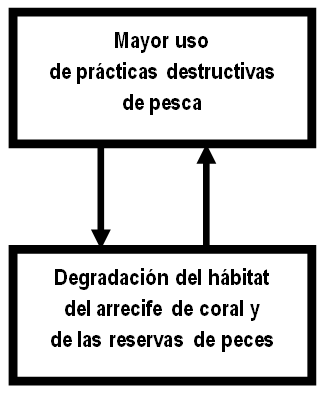
Figure 1. Circulo vicioso del uso de de las prácticas destructivas de pesca, degradación del hábitat del arrecife de coral y reducción de las reservas de peces.
Los pescadores tenían que remar cada vez más lejos de sus hogares, con jornadas de trabajo muy largas, en busca de lugares en los cuales aún hubiera suficientes peces - y pescarlos de manera destructiva para poder obtener la mayor cantidad posible. Con este tipo de pesca, los pescadores no tenían ningún interés por el futuro del lugar de donde obtenían su recurso.
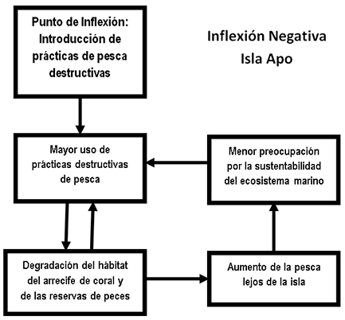
Figura 2. Dos círculos viciosos interconectados y mutuamente reforzados que condujeron al declive de la pesca costera artesanal en las Filipinas. Una es un espiral de disminución de las reservas de peces y de pesca más destructiva, y la otra es la pesca más alejada del hogar donde la gestión no tiene importancia.
El gobierno filipino reaccionó con leyes en contra de la pesca destructiva, pero no fueron eficaces. Actualmente, las reservas de peces son apenas 5% de lo que eran hace cincuenta años. En muchos lugares, un pescador sólo puede capturar uno o dos peces al día - o quizás ningunos.
Pero esto no ha sucedido en todos los lugares. Hace treinta años, la isla Apo se encontraba totalmente inmersa en esta espiral descendente, pero sus habitantes rompieron ese esquema.
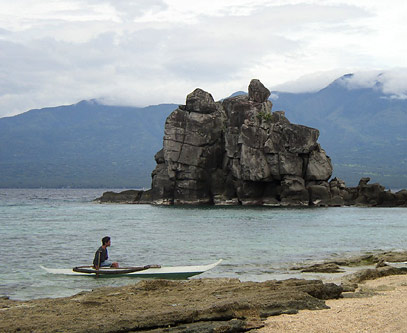
Figura 3. Un pescador de arrecife en la isla Apo
El cambio comenzó cuando un científico marino (Angel Alcala) en Silliman, una Universidad cercana, habló con pescadores de la isla Apo sobre lo que estaba sucediendo y de lo que podrían hacer al respecto. El diálogo continuó durante dos años, y en 1982 los pescadores decidieron declarar 450 metros de la franja costera, 10% de las zonas de pesca alrededor de la isla, como una zona de veda pesquera: Un santuario marino que ayudara a reaprovisionar las reservas de peces alrededor del resto de la isla. Los habitantes de la isla no estaban seguros de que esta acción fuera a mejorar la pesca, porque las zonas libres de pesca no eran una tradición en las Filipinas. Los pescadores eligieron un área donde las reservas de peces estaban gravemente degradadas. No había mucho que perder. La implementación fue fácil: una persona en la playa para vigilar el santuario, una tarea rotativa entre las familias de los isleños.

Figura 4. El santuario marino de la isla Apo
Tres años después, el santuario contaba con un número impresionante de peces. El mejor lugar para pescar era justo afuera del santuario, pero lo más importante, los pescadores estaban tan inspirados por lo que había sucedido dentro del santuario, que decidieron hacer algo por el resto de las zonas pesqueras de la isla. Los pescadores hicieron, e implementaron, dos reglas: únicamente los pescadores de la isla Apo podían pescar ahí; y la pesca destructiva quedó prohibida. Decidieron retornar a las prácticas de pesca tradicionales como el uso del cordel y anzuelo, trampas para peces y redes de malla grande.
Las nuevas reglas hicieron que se generara un conflicto entre los pescadores de la isla y algunos niveles superiores de gobierno que tenían la autoridad sobre el manejo de la actividad pesquera. Afortunadamente, una ONG local apoyó al gobierno local de la isla para organizar la autoridad legal y así poder tener control propio de sus zonas de pesca. Para la implementación, los pescadores de la isla Apo crearon una "guardia marina" con voluntarios locales.
Hubo un mejoramiento rápido en la pesca de la isla, a pesar de que tuvieron que pasar casi diez años para que las reservas de los peces más grandes y valiosos pudieran recuperarse por completo. Poco a poco, las reservas de peces se recuperaron en toda la isla, y la pesca lejana a la isla llegó a ser cada vez menos necesaria. Actualmente, toda la pesca se lleva a cabo en la isla y en unas cuantas horas de pesca cada día pueden obtener todo lo que necesitan. A los pescadores les importa mucho el futuro de la pesquería porque es de ellos.
La figura 5 muestra cómo se revirtieron los círculos viciosos. Las relaciones de causa y efecto siguen como antes, pero la dirección del cambio de cada elemento es el contrario al de antes. Y el progreso fue reforzado por nuevos "círculos virtuosos" (en azul) que involucraron concientización, experiencia, orgullo y compromiso: "El éxito genera éxito."
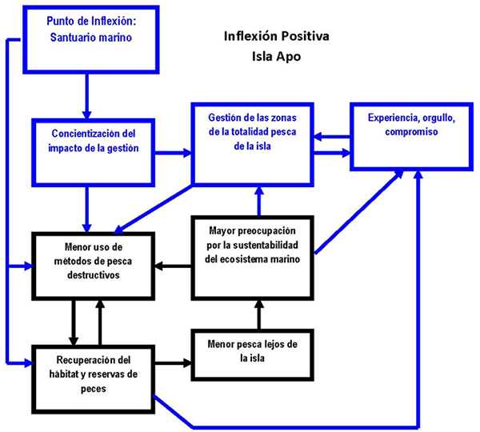
Figura 5. Círculos virtuosos que condujeron a la isla Apo a la sustentabilidad
Negro: Círculos virtuosos revertidos por el punto de inflexión para formar círculos virtuosos.
Azul: Nuevos círculos virtuosos puestos en marcha por el punto de inflexión.
La restauración del ecosistema del arrecife de coral de la isla Apo detonó una serie de beneficios accesorios ("spin-offs") reforzando el cambio hacia la sustentabilidad. El turismo del arrecife generó recursos económicos para el gobierno local y las familias de la isla. Había retos. El snorkelismo y el buceo amenazaban con dañar el ecosistema del coral, sin embargo, la comunidad de la isla logró prevenir el daño con la experiencia que tenía manejando sus zonas pesqueras.

Figure 6. La zona turística de la isla Apo
Lo más significativo fue que usaron incluso una parte de sus ingresos obtenidos del turismo para mejorar su escuela primaria y agregar un plan de estudios de ecología marina. Actualmente muchos de los niños de la isla asisten a la universidad con un fuerte compromiso para sostener la integridad del ecosistema marino de la isla. También iniciaron un programa de planificación familiar para garantizar que la población futura de la isla no exceda la capacidad de carga de sus territorios de pesca. Todo el mundo está involucrado. Pregunten a los niños cuántos hijos desean tener, y les responderán: "¡Dos!".
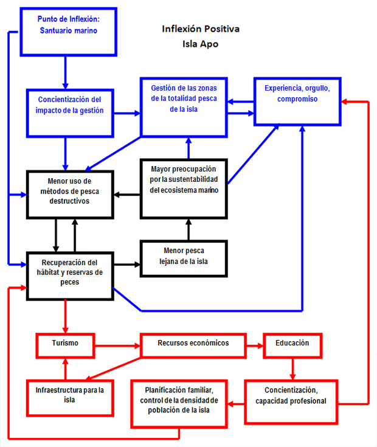
Figura 7. Todos los círculos virtuosos de la isla Apo. Se incluyen los beneficios accesorios ("Spin-offs") con sus círculos virtuosos asociados (en rojo)
Todos en la isla tienen la creencia de que el santuario es sagrado. Afirman que el santuario salvó su ecosistema marino, su pesquería y su estilo de vida, pero el santuario fue simplemente la palanca que impulsó este proceso. Fue un EcoTipping Point - un punto de inflexión ecológica.

Figure 8. Los niños de la isla Apo embarcados hacia un futuro sostenible y resiliente
Visitantes de otras aldeas de las Filipinas han ido a la isla Apo para ver lo que está sucediendo, y actualmente 400 aldeas cuentan con santuarios marinos. No todos están funcionando como debieran, sin embargo muchos parecen estar sobre el mismo camino que Apo (White et al. 2002).
La historia completa de la isla Apo se encuentra disponible en el siguiente sitio de Internet: (historia detallada).
Breves explicaciones con los diagramas de los círculos viciosos y virtuosos del caso de la isla Apo y de otros casos de puntos de inflexión se encuentran disponibles en el siguiente sitio.
¿Qué Nos Dice la Historia de la Isla Apo?
Primero que nada, al igual que en otras historias de puntos de inflexión, existieron cambios dramáticos en el comportamiento del sistema –cambios de la sustentabilidad a la degradación, y la viceversa. Segundo, los cambios pudieron ser rastreados hacia atrás a palancas que los hicieron entrar en acción. Estas palancas y los cambios conforman una obra teatral de tres actos:
Primer acto. Sustentabilidad. Tiempos en los que se llevaban a cabo prácticas sustentables.
Segundo acto. "La inflexión negativa" ("negative tip") - Un cambio de lo sustentable a lo no sustentable. La introducción de métodos de pesca destructivos que pusieron en marcha el deterioro en el sistema de soporte ambiental, acompañado del deterioro del bienestar de las personas que dependían de este sistema de soporte. Resultaron intentos fallidos para lidiar con la problemática (por ejemplo, leyes de que prohibían de la pesca destructiva). Los esfuerzos infructuosos estaban "nadando contracorriente."
Hoy día estamos rodeados por inflexiones negativas, pero las historias exitosas tienen un Tercer acto. "La inflexión positiva" ("positive tip") - Un cambio de lo no sustentable a lo sustentable. La creación del santuario marino fue el mecanismo que puso en marcha el proceso de restauración.
Un punto de inflexión ecológica es una eco-tecnología apropiada, en el sentido más amplio de la palabra, combinada con la organización social que permite implementarla de manera efectiva. No cualquier eco-tecnología es capaz de hacer el trabajo. ¿Qué es lo que la hace efectiva para una situación en particular? Primero que nada, los puntos de inflexión son catalíticos. Ponen en marcha una cascada de cambios, sin embargo hace falta algo más que eso. Y es aquí en donde encontramos el punto crucial: Lo importante son los circuitos de retroalimentación que impulsan el cambio. Si el deterioro ambiental es generado por los círculos viciosos, el deterioro será revertido sólo si estos círculos viciosos son revertidos. Es probable que esto no sea fácil. Posiblemente los circuitos sean muy fuertes. Pero bajo estas circunstancias, es la única forma de caminar rumbo a la restauración.
Y ahora, las buenas noticias. Una vez que los círculos viciosos son revertidos, los circuitos de retroalimentación funcionarán de una forma igualmente poderosa para reforzar la restauración y devolver salud del ecosistema. Y derivan en nuevos círculos virtuosos, tales como el de "éxito genera éxito", los cuales aceleran el proceso y amarran los logros.
¿Qué es lo que se necesita para revertir los círculos viciosos? ¿Cuáles son los ingredientes para que exista un mecanismo exitoso? A continuación se presentan los ingredientes que hemos observado en la isla Apo y en otras historias de puntos de inflexión ecológica.
- Estimulación y facilitación desde afuera para generar concientización y una perspectiva amplia de posibles rutas de acción (Rogers 2003). El biólogo marino fue esencial para que las cosas comenzaran a darse, después la ONG ayudó a asegurar la autoridad legal para control de la pesquería local, y más tarde otra ONG ayudó a implementar la planificación familiar.
- Coadaptación entre el sistema social y el ecosistema (Marten 2001). El sistema social y el ecosistema encajaron de tal forma que funcionaron como un todo sustentable. Después de crear el santuario marino, las percepciones, valores, conocimiento, tecnología, organización social e instituciones sociales evolucionaron de tal forma que elevaron la sustentabilidad.
- Participación comunitaria con fuertes instituciones democráticas localesy un compromiso a largo plazo por la parte del liderazgo local (Westley et al. 2007). El éxito de la isla Apo no se caracterizó por una regulación desde los niveles altos a los bajos ni elaborados planes de desarrollo con metas poco realistas. Al corazón del proceso: organización comunal que correspondió al recurso comunal (Ostrom 1990).
- "Dejar que la naturaleza haga el trabajo." No había micro-gestión. La comunidad de la isla permitió a la naturaleza movilizar sus propios poderes de auto-organización y restauración.
- "El efecto demostración." Las poblaciones de peces reaccionaron rápidamente. La rápida retribución y un símbolo fuerte (el santuario) puso en marcha el compromiso de la comunidad.
- Lidiando con la complejidad social (Tainter 1990). El sistema más amplio puede presentar varios obstáculos para el éxito. Por ejemplo:
- Numerosas exigencias encontradas para obtener la atención, energía y tiempo del pueblo;
- Supresión de la innovación por parte de personas que se sienten amenazadas;
- Intentos desde afuera para asumir el control de los recursos valiosos después de restauración;
- La dependencia disfuncional.
- Diversidad social y ecológica, incluyendo la memoria social y ecológica (Berkes 2002). Una mayor diversidad significó mayores alternativas y oportunidades para tener buenas elecciones en la toma de decisiones. La riqueza de especies del ecosistema marino mejoró de igual manera su capacidad de auto-restauración. La memoria social jugó un papel clave cuando los pescadores retornaron al uso de las prácticas pesqueras tradicionales, que sabían ser funcionales y sustentables.
- Construyendo resiliencia (Walker y Salt 2006). "Lock in": Amarrando la sustentabilidad. Los beneficios accesorios del santuario tales como el ingreso derivado del turismo, educación de calidad, asociaciones de mujeres y el fortalecimiento de la solidaridad comunitaria por lo general, reforzó la habilidad de la comunidad de la isla para mantener su éxito frente a retos desconocidos en el futuro.
Escapando de la Trampa de los Pesticidas
Otra historia - esta vez de India (Ramanjaneyulu 2004, Marten y Williams 2006). Esta historia trata sobre la dependencia de los pesticidas, pero podría ser también dependencia de los combustibles fósiles o de muchas otras cosas.
Hace veinticinco años se involucró a agricultores pobres en la producción de algodón en Andhra Pradesh y se les proveyó con todos los insumos modernos a crédito. Al principio, los agricultores obtuvieron ganancias que nunca antes habían percibido. Sin embargo, diez años después se encontraron atrapados en una espiral descendente de resistencia a los pesticidas, uso creciente de aplicaciones de pesticida más fuertes, pérdida de insectos benéficos y de aves que se alimentaban de plagas del algodón, envenenamiento crónico y agudo de los habitantes de la aldea y deudas crecientes derivadas de los gastos por pesticidas (Figura 9). La consecuencia de todo esto fue la desesperación y el índice más alta de suicidios en India. El método de suicidio predominante era un "cóctel de pesticidas".
Estaban atrapados. No podían dejar de emplear pesticidas, dado que se habían perdido los controles naturales. Los cultivos eran una pérdida total sin los pesticidas. No podían dejar de cultivar el algodón por las deudas que tenían con los intermediarios que les vendían los pesticidas, compraban sus cosechas, les daban crédito y que además demandaban el pago total de las deudas si los agricultores dejaban de ser sus clientes.
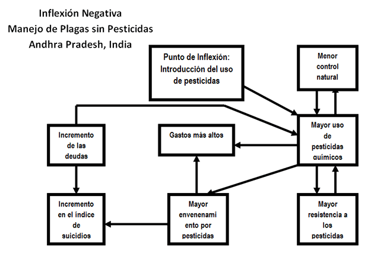
Figura 9. Círculos viciosos responsables de la trampa de los pesticidas en Andhra Pradesh, India
Al igual que otras aldeas de la región, la aldea de Punukula ya había tocado fondo cuando un trabajador de una ONG local comenzó a hablarles a los agricultores del Manejo de Plagas sin Pesticidas, que está basado en el uso del neem. Las semillas y las hojas de este árbol común se pulverizan, se remojan en agua durante la noche y la solución se aplica al cultivo. Los insectos de la plaga se mueren de hambre y los insectos benéficos se mantienen intactos.
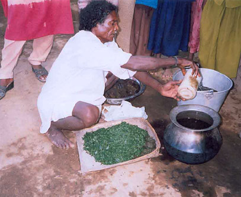
Figura 10. Preparando la solución de neem
Había más en la caja de herramientas:
- Aplicación de una solución de chile y ajo en el cultivo del algodón. Los insectos dañosos se caen de la planta. Los depredadores que se alimentan de dichos insectos no son afectados.
- Aplicación de una mezcla de estiércol y orina de vaca, lo cual actúa como un repelente de insectos, provee de un hábitat favorable para las bacterias patogénicas de los insectos de la plaga, y fertiliza el suelo.
- Siembra de "cultivos trampa" (por ejemplo, sorgo, caléndula, ricino y maíz) alrededor de la orilla de los campos para distraer a los insectos del algodón.
- Remoción manual y quema de algodón y de ramas de los "cultivos trampa" que están fuertemente infestados de insectos de la plaga.
- Uso de discos de madera amarillos o blancos cubiertos con grasa pegajosa. Los discos atraen a los insectos de la plaga y los atrapan.
- Uso de pequeñas fogatas en las noches sin luna para atraer a las polillas del gusano bellotero y matarlas antes de que pongan sus huevecillos.
- Uso de perchas en los campos para atraer aves insectívoras.
- Arado profundo en el verano para interrumpir el ciclo de vida en el suelo de las crisálidas de la plaga.
- Aplicación de un extracto de virus "nuclear poliedral." Se recolectan de los campos larvas de gusano bellotero infectadas de manera natural. Es fácil reconocerlas al colgar boca debajo de las orillas de las hojas. Estas larvas se pulverizan formando una solución que se aplica en forma de spray a la cosecha. Esto es un recurso propio de los agricultores y obtenido de la biodiversidad. Y no es necesario que lo compren a una empresa multinacional de alta tecnología.
- Uso de tabletas de feromona baratas para atraer las polillas de gusano bellotero para poder monitorear el tamaño de su población. Los agricultores ahorran tiempo y esfuerzo al atomizar neem y otros pesticidas botánicos en los cultivos sólo cuando es realmente necesario.

Figure 11. Preparación para rociar un campo de algodón con neem
Un desesperado agricultor de la aldea de Punukula decidió valientemente probar el Manejo de Plagas sin Pesticidas. Ese fue el punto de inflexión ecológica. La cosecha en que no se utilizó pesticidas resultó algo dañada, al igual que las cosechas que sí los utilizaron. Sin embargo, obtuvo buenas ganancias dado que no pagó ni una sola rupia para comprar pesticidas. En el lapso de dos años, todos en la aldea estaban usando el Manejo de Plagas sin Pesticidas y comenzaron a salir de sus deudas. Los intermediarios tomaron represalias pagando un precio menor por el algodón producido sin pesticidas, pero los agricultores formaron una cooperativa y encontraron otros compradores. En la Figura 12 es posible apreciar cómo es que fueron revertidos los círculos viciosos. Las aves y los insectos benéficos regresaron, así como el control natural de las plagas del algodón, y ahora los agricultores ni siquiera tienen que recurrir tanto al uso del neem.
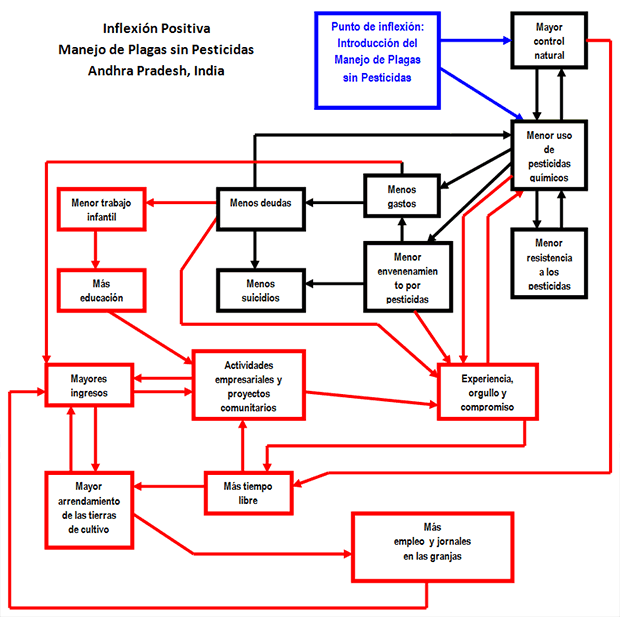
Figura 12. Círculos virtuosos que sacaron a la aldea Punukula del camino de los pesticidas dirigiéndolos hacia una mejor vida.
Negro: Círculos viciosos revertidos por el punto de inflexión. Rojo: Beneficios accesorios ("spin-offs).
El éxito de los aldeanos de Punukula les dio la confianza necesaria para emprender más retos. Cambiaron el uso de fertilizante químico por vermi-composta, reduciendo aun más los costos de los insumos. Algunas mujeres montaron un negocio vendiendo el polvo de neem a otras aldeas. La aldea comenzó a procesar el algodón antes de venderlo, haciendo tela. Y estableció un programa para rescatar a los niños contratados a las labores del campo y para regresar a la escuela aquellos jóvenes que habían abandonado sus estudios.
Los habitantes de otras aldeas fueron a Punukula para ver lo que estaba sucediendo, y con el apoyo de ONG locales hoy en día, cientos de aldeas utilizan el Manejo de Plagas sin Pesticidas. Las empresas multinacionales de pesticidas intentaron ejercer presión sobre el gobierno del estado para suprimirlo. No obstante, el gobierno agregó el Manejo de Plagas sin Pesticidas a su programa de extensión agrícola.

Figure 13. Una mujer de Punukula explicando los beneficios del Manejo de Plagas sin Pesticidas para su calidad de vida.
Otras Historias Exitosas de Puntos de Inflexión Ecológica
En el siguiente sitio de Internet es posible encontrar muchas otras historias: www.ecotippingpoints.org. Por ejemplo:
- Los jardines de la comunidad en la ciudad de Nueva York (Marten et al. 2005), revirtieron un círculo vicioso de deterioro urbano, negligencia y éxodo de la población a la renovación de vecindades, producción de alimentos para la comunidad local y hábitat para la fauna urbana (historia detallada).
- La construcción de un humedal costero artificial en Arcata, California (Suutari y Marten 2007), facilitó el procesamiento municipal de aguas residuales a un bajo costo. Simultáneamente, se creó un hábitat de primera clase para la vida silvestre y un espacio para la recreación al aire libre en una zona urbana. La construcción de humedales en las ciudades vecinas ha transformado el desarrollo urbano de manera que ha logrado contener la mancha urbana (historia detallada).
- El resurgimiento de la captura de agua de lluvia en los diques de Rajasthan, India (Marten et al. 2005), revirtió un círculo vicioso de acuíferos agotados, pozos y ríos secos, detrimento de la leña, degradación agrícola y éxodo de la población - trayendo de regreso el agua, vegetación, vida silvestre y una vida digna para el pueblo (historia detallada).
- El manejo comunal de un manglar en la Provincia de Trang, en Tailandia (Suutari y Marten 2007), revirtió el círculo vicioso de la destrucción del manglar, la degradación de las pesquerías costeras y de la práctica de actividades destructivas por parte de la población a medida que los recursos se deterioraban - restaurando el hábitat del manglar, arrecifes de coral, pesquerías costeras y oportunidades económicas (historia detallada).
La Aplicación de los Puntos de Inflexión Ecológica - Revirtiendo la Deforestación al Sudeste de Asia
Recientemente el proyecto de EcoTipping Points ha sido retomado para la aplicación. Las palancas que aparecieron en los casos exitosos pueden ser reconocidas en retrospectiva. Pero, ¿Qué hay de la creación de palancas cuando la inflexión positiva aún no ha comenzado a darse?
La clave está en identificar los círculos viciosos que están conduciendo hacia el deterioro en una situación dada. La aplicación práctica de este principio consiste en aprovecharse del conocimiento personal de un grupo para generar el diagrama de los círculos viciosos. Un catálogo de circuitos de retroalimentación - "arquetipos" - puede ser de utilidad para que un grupo pueda plasmar su conocimiento en un diagrama (Senge 1990, Maani y Cavana 2000, Coyle 2004).
Y luego sigue el paso más creativo: La búsqueda de palancas que se conecten lo suficientemente fuerte a los círculos viciosos como para poder revertirlos. Entre más formas de conexión se encuentren, mejor.
Los casos exitosos pueden ser una fuente de inspiración para encontrar palancas efectivas. Un ejemplo relacionado con la deforestación en el Sudeste de Asia nos muestra como las personas pueden extrapolar un caso exitoso, un modelo de un lugar, para identificar palancas prometedoras en una situación similar en otra localización (Marten 2008). Ésta es la historia de tal modelo.
En los sesentas, la explotación forestal comercial en la provincia de Nakhon Sawan en Tailandia brindó a las familias inmigrantes y sin tierras, nuevos terrenos de labranza. Las tierras parecían prometer grandes oportunidades. De acuerdo con una política de incremento de las exportaciones agrícolas, el gobierno otorgó préstamos y asistencia técnica a los agricultores para motivarlos a sembrar cultivos comerciales como el arroz, el maíz, el yute y tapioca. Los agricultores nunca antes habían tenido tanto dinero, no obstante cayeron en un espiral descendente que amenazó con obstruir sus oportunidades para una vida mejor. Fue una inflexión negativa.
Esto sucedió debido a que la expansión de los mercados de cultivos comerciales puso en marcha una cadena de eventos inesperados, en el cual unos círculos viciosos interconectados y mutuamente reforzados condujeron a un deterioro progresivamente mayor. (Figura 14):
- Un cambio de la policultura a la monocultura de los cultivos comerciales más redituables propició la mecanización así como el uso de fertilizantes químicos y pesticidas. Los agricultores se endeudaron para poder cubrir los gastos de estos insumos.
- Los agricultores talaron los bosques para expandir su terreno de cultivo y obtener mayores ganancias para poder pagar sus deudas y cubrir los costos crecientes de los insumos agrícolas, derivados de un aumento de problemas con el suelo y las plagas. Las deudas empujaron a los campesinos a dedicarse a la tala clandestina y a la sobreexplotación de una amplia variedad de productos forestales de los que dependían las familias tanto económicamente como para autoconsumo.
- Debido a la deforestación, la integridad hidrológica de las cuencas se vio afectada, provocando un aumento en las inundaciones, un suministro de agua poco fiable, daño de los cultivos y crisis financieras familiares.
- Las deudas crecientes provocaron la migración a las ciudades de integrantes de las familias (especialmente de los hombres), para buscar trabajo y así poder aumentar los ingresos familiares. Dado que ahora habían menos miembros de la familia en casa, fue necesario introducir maquinaria o contratar mano de obra externa, lo cual resultó en un mayor incremento de los costos de insumos agrícolas. Además, se desgastó la solidaridad de la comunidad y los sistemas de apoyo tradicionales. Por primera vez surgió el problema de la delincuencia juvenil.
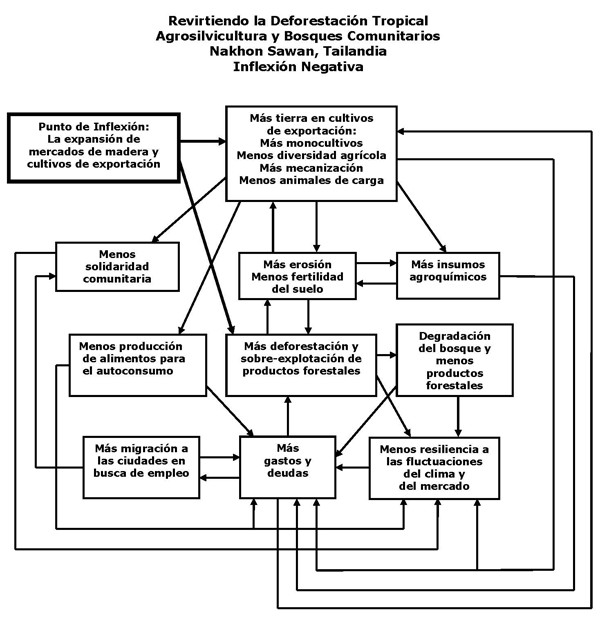
Figura 14. Círculos viciosos que condujeron a la deforestación en la provincia de Nakhon Sawan, en Tailandia.
La inflexión positiva comenzó a darse cuando un equipo de "Save the Children" ("Salven a los Niños") trabajó con miembros de la aldea Khao Din para concientizarlos sobre el origen de sus problemas. Finalmente, los aldeanos comenzaron a darse cuenta de que fueron ellos mismos los responsables de esta situación. Esto los motivó a considerar lo que podrían hacer para revertir la situación, con base en su comprensión del problema y sus causas. Y así idearon su propia solución:
Save the Children es una Organización No Gubernamental (ONG) que trabaja para la defensa y promoción de los derechos de la infancia, en el marco de la Convención sobre los Derechos del Niño de Naciones Unidas, y que lucha por un mundo más justo para todos los niños y las niñas.
- Desarrollo de la agroforestería en sus terrenos de cultivo;
- Establecimiento de un "bosque protegido" manejado por la propia comunidad.
- Un proceso de diálogo comunitario y de solución de problemas que permitió una implementación exitosa.
El mantener un bosque protegido como parte integral del paisaje proporcionó:
- Una sana cuenca de agua con un suministro de agua fiable, prevención de inundaciones y protección contra la erosión del suelo;
- Un abastecimiento más seguro de productos forestales para generar ganancias y para el autoconsumo.
La agroforestería ofreció:
- Mayores ingresos de cultivos de árboles de alto valor (y la consecuente reducción de las deudas);
- Mayor cobertura vegetativa que condujo a una menor erosión del suelo, aumento de la fertilidad del suelo y cuencas hidrológicas más sanas;
- Menores costos de producción debido a la disminución del uso de fertilizantes químicos y de pesticidas y menos insumos de labranza (lo que permitió que los agricultores dedicaran un mayor tiempo al sistema de apoyo de su comunidad);
- Mayor diversidad de cultivos, proporcionando mayor resiliencia al clima y a las fluctuaciones del mercado.
Los cambios anteriores revirtieron los círculos viciosos de la inflexión negativa, transformándolos en círculos virtuosos que promovieron y sostuvieron un paisaje más sano y productivo así como más saludable económicamente y socialmente (Figura 15). Luego el punto de inflexión ecológica y sus beneficios se extendieron hacia otras aldeas del distrito.
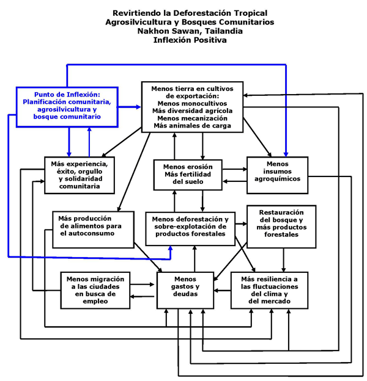
Figura 15. Inversión de los círculos viciosos para la creación de círculos virtuosos que condujeron a la restauración del bosque.
El apéndice que se encuentra al final de este artículo da cuenta de esta historia de éxito como la experimentó uno de los campesinos. Mi colega Amanda Suutari presenta toda la historia con numerosas citas tomadas de las entrevistas en un informe de trabajo de campo (historia detallada).
Pensando de lo que sucedió en Tailandia como un modelo, Paula Manginsela (Universidad Sam Ratulangi, Manado, Sulawesi del Norte, Indonesia) y yo hemos usado diagramas de retroalimentación para aplicar en Sulawesi, Indonesia, las lecciones aprendidas en Tailandia. Los aldeanos de Sulawesi se encuentran atrapados en un círculo vicioso de pobreza y de degradación de los recursos naturales. La espiral descendente (Fig. 16) se ha visto movida por el aumento de la población humana, el cual ha conducido a los mismos deterioros que vimos en la inflexión negativa de Tailandia:
- Escasez de tierra y pobreza,
- Tala ilegal en busca de espacio para la agricultura y para obtener dinero de la venta de la madera,
- Sobre-explotación de los productos forestales no relacionados con la madera, para la venta y el uso doméstico;
- Degradación de la cuenca, lo cual ocasiona inundaciones en la época de lluvia y escasez de agua en la temporada de sequías.
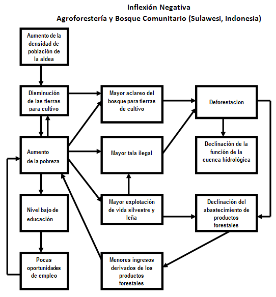
Figura 16. Círculos viciosos que condujeron a la deforestación en Sulawesi, Indonesia.
Desarrollamos un programa de educación, facilitación y entrenamiento que incluye elementos similares a los mencionados en la historia de Tailandia - manejo comunitario del bosque y la incorporación de la agroforestería en los sistemas agrícolas de las aldeas - así como elementos adicionales de particular relevancia a la situación local: lo cual expande la industria familiar y desarrolla el proceso local de la agricultura y los productos forestales. La figura 17 muestra cómo este programa podría poner en movimiento una cascada de cambios que se conectan con los círculos viciosos de la inflexión negativa, de tal manera que los revierte, convirtiéndolos en círculos virtuosos que restauran los recursos naturales y reducen la pobreza:
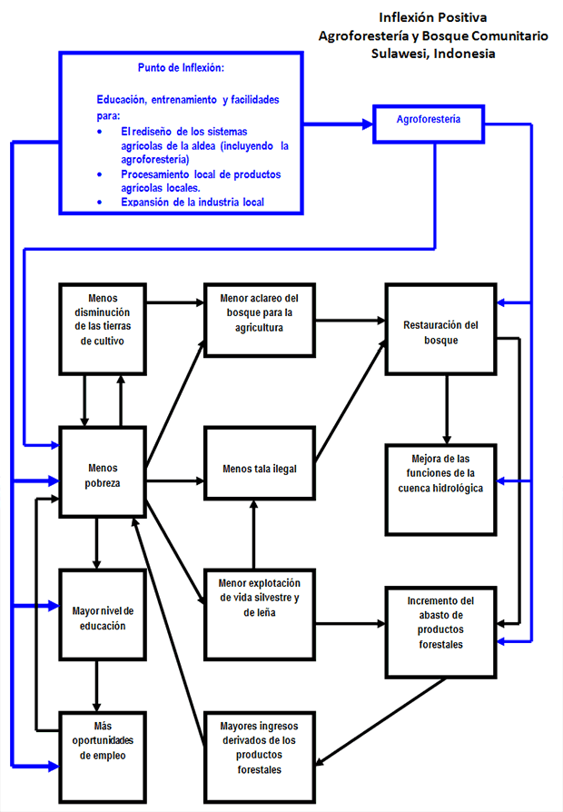
Figura 17. Punto de inflexión propuesto para revertir los círculos viciosos, creando así círculos virtuosos que conduzcan a la restauración del bosque.
Además, después de la intervención un diagrama como este puede utilizarse para identificar los factores que merecen ser monitoreados. La palanca es exitosa si no solo impacta las variables de intervención sino también revierte aquellos elementos interconectados fuertemente con la intervención, que juntos forman el sistema de deterioro entero. De otra manera, no habrá éxito a largo plazo.
Las lecciones y procedimientos de este ejercicio podrían resultar útiles no tan sólo para la integridad de los bosques y las cuencas a lo largo de los trópicos, y el bienestar de las comunidades que dependen de ellos; también podrían tener implicaciones de largo alcance para el cambio climático, ya que la deforestación libera dióxido de carbono hacia la atmósfera y la restauración de los bosques provoca un mayor secuestro de carbono.
Se puede ver la historia completa en el siguiente sitio.
Conclusiones
Los puntos de inflexión ecológica nos brindan una perspectiva para:
- Entender la dinámica compleja del deterioro y restauración ambiental;
- Identificar acciones factibles para revertir el deterioro ambiental;
- Movilizar a las poderosas fuerzas sociales y ecológicas para que funcionen a favor de la sustentabilidad y no en contra.
Pero no son balas de plata. Inclusive con las mejores palancas, los problemas ambientales no podrán ser resueltos de la noche a la mañana, ya que se requiere de mucho trabajo duro sin importar cómo éste se lleva a cabo. Sin embargo, en un mundo de recursos limitados, los puntos de inflexión ofrecen una esperanza, y un nuevo lente para ver tanto los problemas como las soluciones. Enfrentan los temores que tenemos de que los problemas son demasiado grandes, demasiado costosos, y demasiado complicados de resolver. Las acciones que dan cuenta de los círculos viciosos que propician el deterioro pueden servir de palanca para las fuerzas autoorganizativas de la sociedad humana y los ecosistemas para que se restauren en conjunto.
Para el avance del proyecto de EcoTipping Points estoy siempre en busca de nuevas historias de éxito. También le doy la bienvenida a los individuos o grupos comunitarios que deseen colaborar para aplicar los puntos de inflexión ecológica en su situación en particular. Así podremos aplicar los principios y los procedimientos de EcoTipping Points al mismo tiempo que los afinamos.
Apéndice: Una Narración - Cómo Revirtieron la Deforestación en la Provincia de Nakhon Sawan, Tailandia.
En los años sesenta, Tailandia estaba lista para salir de su economía tercermundista basada en la agricultura y llegar a ser una nación moderna, industrializada y próspera. El gobierno echó a andar un modelo Occidental de crecimiento con el desarrollo dirigido a la exportación como el elemento central. La política era utilizar los bosques y la producción agrícola como fuentes para que el ingreso por intercambio extranjero generara inversión en un creciente sector de manufactura. Y si el ingreso interno bruto es tu patrón y medida, el planteamiento era un éxito rotundo. Pero para el campesino, a pequeña escala, Thanawm Chuwaingan y millones como él, la historia era completamente diferente.
Thanawm emigró en 1954 del empobrecido altiplano Khorat en el Noreste de Tailandia a la aldea de Khao Din en la provincia de Nakhon Sawan, más o menos a 225 kilómetros al norte de Bangkok, para hacer una reclamación en una zona forestal recién abierta. De acuerdo a las palabras de Thanawm, "Era fácil encontrar comida. Había muchas plantas y verduras comestibles que crecían de manera silvestre cerca de nuestras casas. Era fácil pescar en los arroyos. También había muchos animales silvestres, tales como jabalíes, venados, tigres y elefantes."
La vida era fácil contando con tanta abundancia y un espíritu de cooperación en la aldea. Sin embargo las cosas empezaron a cambiar en los años sesenta y setenta. El gobierno quería que los campesinos se modernizaran y que cultivaran productos que generaran dinero tales como arroz, maíz, yute y tapioca para exportarlos. Se talaron los bosques para vender la madera y ampliar los terrenos agrícolas. El gobierno concedió préstamos para adquirir insumos tales como semilla híbrida, fertilizantes químicos, pesticidas y equipo agrícola.
Sin embargo los campesinos, que nunca antes habían tenido tanto dinero en sus bolsillos, también usaron los préstamos para comprar radios, motocicletas y otros tipos de mercancías modernas. Posterior al flujo inicial de dinero rápido, los precios de las cosechas comenzaron a bajar debido a que muchos campesinos estaban cultivando el mismo producto. Los campesinos empezaron a endeudarse seriamente.
Para tratar de ponerse al corriente con sus adeudos los campesinos talaron lo que quedaba de los bosques para expandir sus campos ya que lo que tenían ya no era suficiente para subsistir. En palabra de Thanawm, "Por ese tiempo, prácticamente ya no quedaban árboles en las laderas. El clima se volvió cada vez más caluroso y seco." El suelo, que había sido fértil durante años, se erosionó y se endureció progresivamente con el uso continuo de los fertilizantes químicos. El agua de lluvia escapaba libremente. El producto de las cosechas disminuyó.
En relativamente pocos años, Thanawm y su familia habían pasado de la abundancia y prosperidad Edénicas a la ruina ambiental y a una dura existencia tipificada por el hambre, la pobreza y la desintegración social.
La gente tenía que buscar trabajo en las ciudades durante la temporada de sequías para pagar sus deudas. Las familias se separaban. La migración temporal a grande escala en busca de trabajos urbanos condujo a la desintegración de las comunidades. Las aldeas se poblaron cada vez más por niños y ancianos. La delincuencia juvenil, de la cual antes no se sabía, apareció a medida que las comunidades se separaban rápidamente de sus normas sociales tradicionales.
"A diferencia del pasado cuando la comunidad había estado muy unida, y la gente en verdad se preocupaba por los demás, todos sólo resultaron preocupados por sus propios campos y sus propios problemas familiares. Antes, si alguien tenía un problema, otros estaban prestos a ofrecer su ayuda. Sin embargo, posteriormente, nuestras comunidades empezaron a desbaratarse. Por primera vez en nuestra existencia, empezamos a tener problemas psicológicos y sociales. Había poca confianza y menos cooperación."
En resumen, la aldea se encontraba en lo que parecía ser un deslizamiento ecológico y social. Sin embargo afortunadamente la historia no termina allí. Thanawm y sus paisanos llevaron a cabo algunos cambios claves que apuntaron a su aldea y a su sistema de apoyo ambiental en una dirección positiva. Ellos crearon un punto de inflexión ecológica, una combinación de tecnología ambiental sensata y la organización social para ponerla en práctica. Esta palanca revirtió el deterioro, restauró la salud ecológica y forjó una sociedad más fuerte y más sustentable.
Todo comenzó en 1986, cuando un equipo salido del grupo de ayuda Save the Children fue enviado a la aldea de Khao Din por el gobierno Tailandés. En ese tiempo, el distrito se había convertido en uno de los más pobres del país. En vez de simplemente distribuir la ayuda de los donantes, lo cual había sido práctica común bajo el programa gubernamental de modernización, el equipo de Save the Children despertó la conciencia de los aldeanos en cuanto al verdadero origen de sus predicamentos, y después los ayudó a diseñar sus propias soluciones.
Al principio los aldeanos estaban sospechosos. La confianza se fue desarrollando poco a poco, por medio de largas y en ocasiones arduas pláticas, durante las cuales los miembros del grupo de ayuda le hacían preguntas a los aldeanos que les permitían repasar los pasos que los habían llevado a encontrarse en aprietos. Esto dio como resultado sorprendentes puntos de entendimiento.
Finalmente, los aldeanos reconocieron que ellos mismos eran los primeramente responsables en la causa de sus problemas al tomar las decisiones que habían tomado de cómo usar y administrar sus recursos locales. Al recordar cómo eran la tierra y los recursos naturales entonces cuando llegaron, la gente repetía: "Nunca pensamos que esto pudiera pasar. Nunca nos imaginamos que este lugar de abundancia pudiera convertirse en un desierto. Dios mío, ¿qué hemos hecho?"
Esta toma de conciencia colectiva fue el primer paso en el proceso. Movió a los aldeanos a considerar qué podían hacer para cambiar la situación, basándose en su recién adquirido entendimiento del problema y sus causas.
El segundo paso llegó cuando los aldeanos y el equipo del proyecto formularon una estrategia ecológicamente viable para su comunidad. Empezó con la toma de conciencia de que no tenía sentido "poner todos los huevos en una sola canasta", como ya había sido el caso con los sistemas de monocultivo comercial de altos insumos. Diseñaron sistemas diversificados de agroforestería en los cuales los árboles y los cultivos se intercalaban en el mismo campo, a semejanza en muchas maneras a la estructura del bosque natural. También decidieron restaurar sus bosques dañados con protección y administración de la comunidad local.
La agroforestería no era nueva para los campesinos locales. Sus sistemas de subsistencia tradicionales ya ampliamente abandonados habían incorporado muchos de los mismos elementos. Por lo general implica un estanque o canal usados todo el año como fuente de agua para la irrigación de la plantación, junto con peces y plantas acuáticas comestibles. Existe una amplia variedad de siembras alimenticias como chiles, calabaza, frijoles, y otras verduras, hierbas como el cilantro, zacate limón, galangal, albahaca y menta, frutas como los mangos, fruta de Jack, limón, longan, plátanos, y papayas. Los árboles proporcionan diversas frutas, semillas, madera combustible y materiales de construcción. Todo reunido proporciona una dieta saludable y un ingreso suplementario.
La agroforestería redujo drásticamente el costo de los alimentos domésticos, así como los costos de los insumos agrícolas, porque "la naturaleza hizo mucho del trabajo." Restauró simultáneamente algo de la estabilidad ecológica a la tierra que los bosques habían mantenido por miles de años. La seguridad de contar con alimento todo el año se incrementó también drásticamente. Si alguno de los cultivos fallaba, algún otro sobreviviría exitosamente.
Al principio, solo algunos que podían intentar algo diferente fueron capaces de separar alguna parte de su tierra y energía para tal aventura. Sin embargo, lo que empezó en tan sólo ocho acres de parcelas de demostración creció año con año a medida que más aldeanos adoptaban planes similares en sus propias tierras.
Ya han pasado más de diez años desde que "Save the Children" terminó su proyecto en Khao Din, hoy en día una próspera comunidad de 2,500 habitantes. Veinticinco aldeas en la provincia de Nakhon Sawan ya siguen el ejemplo de Khao Din, dedicándose a una variedad de formas diseñadas localmente de agroforestería y agricultura sustentable en tierras que se extienden por miles de acres. El recrear los procesos ecológicos naturales en los ranchos ha reestablecido los procesos de reciclaje similares a los de los ecosistemas naturales. La erosión del suelo y la degradación debido al uso excesivo de productos químicos han sido revertidas.
Los bosques naturales, ampliamente devastados por el uso indebido, se están regenerando en un área aun más grande. Los bosques restaurados están reparando las cuencas dañadas. Han resurgido los arroyos, junto con una variedad de animales que se creían extintos localmente. Un área que no hace mucho tiempo parecía un paisaje tomado del desierto es hoy en día un sitio adecuado para el ecoturismo. El ingreso adicional proviene de los champiñones y los vegetales del bosque. La migración a Bangkok ha disminuido, y las tendencias que perjudican a la sociedad, ocasionadas por la migración urbana y el irrestricto materialismo, se encuentra ahora bajo control.
Thanawm lo resumió así, "La mayor parte de lo que sucedió, en términos de cambio, fue el cambio de la manera de pensar de la gente. Como comunidad, estamos aprendiendo juntos, compartiendo el conocimiento los unos con los otros. La gente ya no piensa que estamos en problemas, y que no podemos hacer nada al respecto."
"Ahora sabemos que considerando cuidadosamente las cosas y compartiendo mucho del esfuerzo, podemos resolver nuestros problemas, y arreglar lo que se haya roto. Esto les ha proporcionado a nuestras comunidades un tremendo impulso. Y también es algo que de verdad nos ha permitido ejercer una influencia en otras personas, cuyos problemas les son apabullantes, de la misma manera en que lo fueron para nosotros."
"Aun cuando no tenemos mucho dinero, somos felices. Tenemos amigos que nos visitan y tenemos suficiente comida para ellos."
(Las entrevistas de campo para esta narración fueron conducidas por Amanda Suutari. Además, Andrew Mittelman proporcionó muy útil información.)
Bibliografìa
Fikret Berkes, Johan Colding, Carl Folke. 2002. Navigating Social-Ecological Systems: Building Resilience for Complexity and Change. Cambridge University Press.
Geoff Coyle. 2004. Practical Strategy: Structured tools and techniques. Prentice Hall.
Kambiz Maní, Robert Cavana. 2000. Systems Thinking and Modelling. Prentice Hall.
Gerald Marten. 2001. Ecología Humana: Conceptos Básicos para el Desarrollo Sustentable. Earthscan. (www.gerrymarten.com/human-ecology/tableofcontents.html)
Gerald Marten. 2005. Puntos de Inflexión Ecológica: Un Nuevo Paradigma para Restaurar la Seguridad Ambiental. Journal of Policy Studies (Japan) 20: 75-88.
Gerald Marten, Steve Brooks, Amanda Suutari. 2005. Puntos de Inflexión Ecológica: Una Nueva Perspectiva en el Ambientalismo Estratégico. WorldWatch Magazine 18(6):10-14.
Gerald Marten, Donna Glee Williams. 2006. La Limpia: Recuperándose de la Adicción a Pesticidas. The Ecologist 36(10):50-53.
Elinor Ostrom. 1990. Governing the Commons: The Evolution of Institutions for Collective Action. Cambridge University Press.
G.V. Ramanjaneyulu, Kavita Kuruganti, Zakir Hussain, and K. Venu Madhav. 2004. No Pesticides, No Pests. Centre for Sustainable Agriculture, Secunderabad, India.
Laura Raymundo, Alan White. 2005. Fifty years of scientific contributions of the Apo Island experience: a review. Silliman Journal (50th Anniversary Issue), Silliman University, Dumaguete, Philippines.
Everett Rogers. 2003. Diffusion of Innovations (Fifth edition). Free Press.
Gary Russ, Angel Alcala, A Maypa, H Calumpong, Alan White. 2004.Marine reserve benefits local fisheries.Ecological Applications 14:597-606.
Peter Senge. 1990. The Fifth Discipline: The Art and Practice of the Learning Organization. Doubleday.
Joseph Tainter. 1990. Collapse of Complex Societies. Cambridge University Press.
Brian Walter, David Salt. 2006. Resilience Thinking: Sustaining Ecosystems and People in a Changing World. Island Press.
Frances Westley, Brenda Zimmerman, Michael Quinn Patton. 2007. Getting to Maybe: How the World is Changed. Vintage Canada.
Alan White, Catherine Courtney, Albert Salamanca. 2002. Experience with marine protected area planning and management in the Philippines. Coastal Management 30:1-26.
Lecturas Adicionales
Malcolm Gladwell. 2000. The Tipping Point: How Little Things Can Make a Big Difference. Little, Brown, and Company.
Morton Grodzins. 1957. Metropolitan segregation. Scientific American 197(4):33-41.
Gerald Marten. 2007. Puntos de Inflexión Ecológica: El Arte Fino de Aikido Ambiental.
Gerald Marten. 2008. Application of EcoTipping Points to tropical deforestation in Southeast Asia.
Gerald Marten, Amanda Suutari. 2007. Puntos de Inflexión Ecológica. Our Planet 17 (December):20-21.
Amanda Suutari, Gerald Marten. 2007. Puntos de Inflexión Ecológica: Como un Círculo Vicioso puede volverse Virtuoso. Earth Island Journal 22(2):26-31.
Agradecimientos a Esli Suárez por hacer el primer borrador de la traducción de este documento al español; y a David Núñez por sugerencias de redacción.
Este sitio web contiene materia traducida del sitio web www.ecotippingpoints.org.
Traducción: David Nuñez. Redacción: Gerry Marten